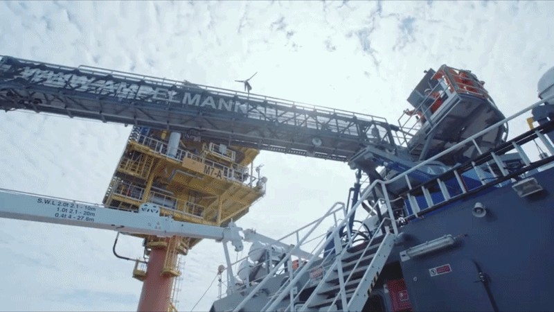
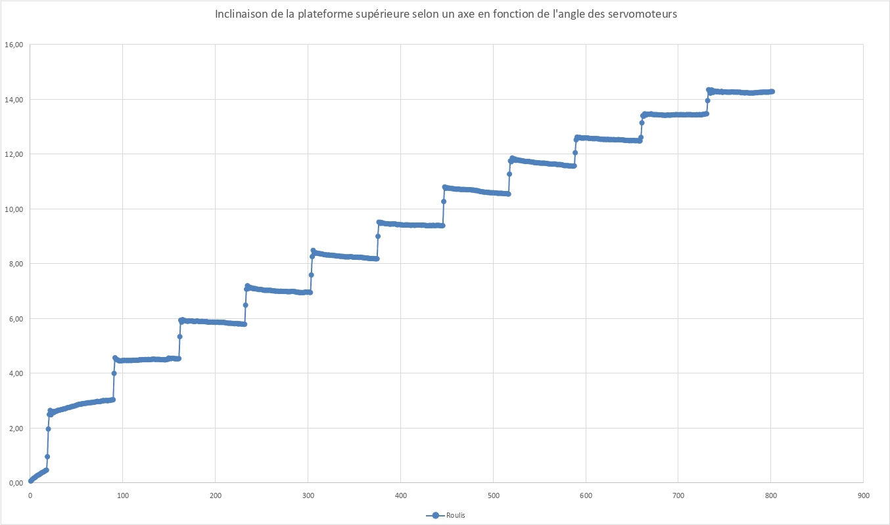
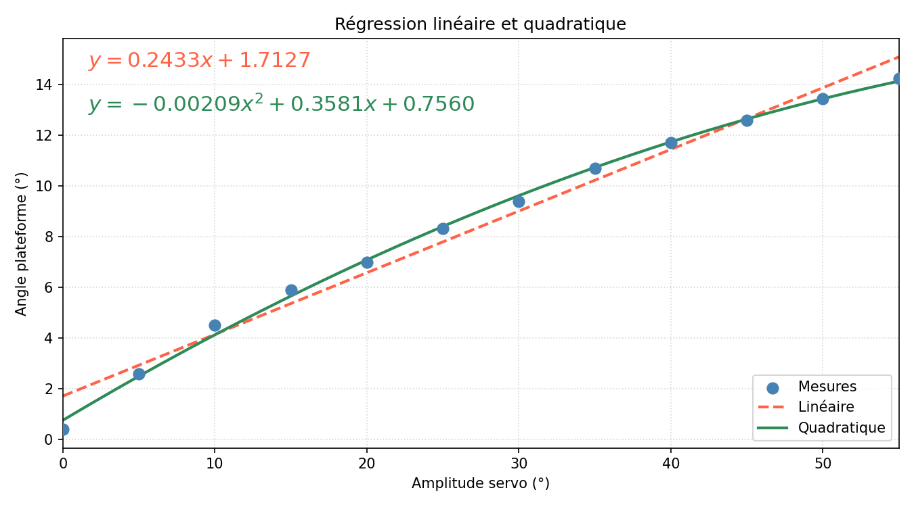
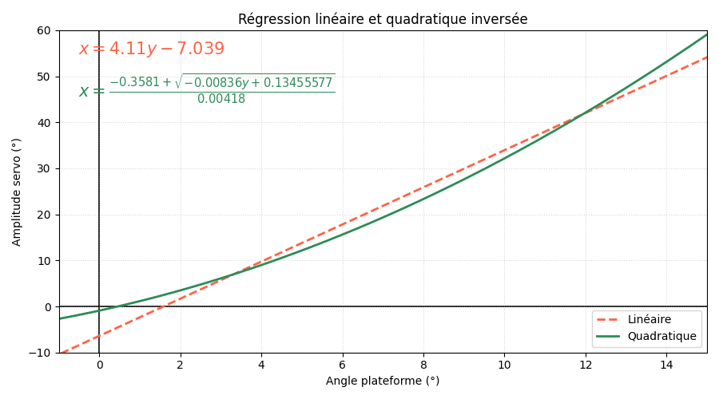
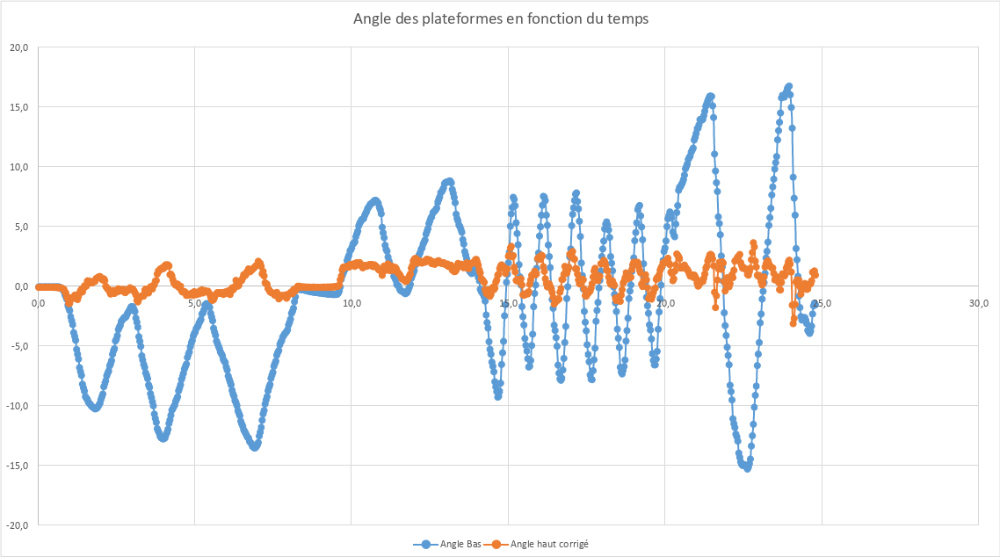
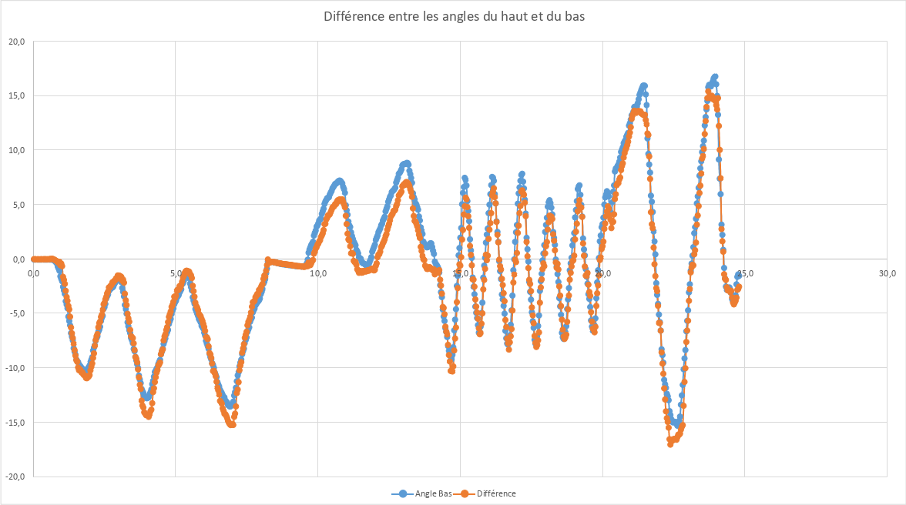

Stabilisation d’une plateforme de Gough-Stewart pour la compensation de la houle
Étude théorique et modélisation géométrique permettant de comprendre et mettre en œuvre la stabilisation d'une plateforme de Gough-Stewart face aux perturbations maritimes.
Introduction
Ce projet s'inscrit dans le cadre du Travail d'Initiative Personnelle Encadré (TIPE), réalisé en classe préparatoire scientifique. Le thème pour l'année 2025/2026 était Cycles et Boucles. En milieu marin, la contrainte cyclique de la houle nuit considérablement aux interventions. Grâce à un asservissement, ce système compense les oscillations subies afin de garantir une stabilité accrue de la plateforme supérieure.
Idée et inspiration
La sécurité des opérations en mer impose de stabiliser les équipements face à la houle. La plateforme de Stewart permet cette compensation de manière active. C’est cette capacité à maintenir une charge immobile grâce à un asservissement précis qui m'a conduit à l'étude de ce système.

En découvrant les systèmes développés par l'entreprise Ampelmann, j'ai été immédiatement fasciné par la structure et l'ingéniosité du fonctionnement de leur plateforme.
Les débuts du projet
Pour étudier ce système, ma première approche a consisté à modéliser en 3D sur SolidWorks une maquette que j'allais ensuite concevoir physiquement. Cette modélisation me permettait non seulement de vérifier la faisabilité de mon projet, mais également d'étudier la cinématique complexe de la plateforme.
.png)
Habituellement, dans les applications industrielles de cette architecture, les 6 actionneurs sont des vérins (hydrauliques ou électriques). Cependant, souhaitant réaliser une version miniature, l'utilisation de mini-vérins s'avérait complexe et coûteuse. J'ai alors opté pour une alternative tout aussi efficace : des servomoteurs. En concevant un système pseudo bielle-manivelle, il est tout à fait possible d'utiliser ces actionneurs rotatifs en lieu et place des vérins linéaires.
 (1).jpg)
.png)
Les difficultés rencontrées
Le plus grand défi de ce projet a été de trouver la relation exacte entre la commande angulaire envoyée aux servomoteurs et l'inclinaison réelle de la plateforme (en roulis ou en tangage). L'objectif final était d'appliquer un principe de superposition pour stabiliser les deux axes simultanément. Toutefois, la tâche s'est avérée particulièrement complexe.
Une première approche purement mathématique a été envisagée. Néanmoins, au vu de la quantité de matrices et de la complexité numérique que cela aurait imposé au microcontrôleur, le temps de calcul aurait été trop lent, rendant l'asservissement inefficace en temps réel.

Les solutions apportées
Pour établir un lien entre la position des servomoteurs (qui reçoivent tous la même consigne angulaire) et l'inclinaison de la plateforme, j'ai commencé par effectuer une série de mesures physiques directement sur le prototype. À partir de ces données empiriques, j'ai tracé un nuage de points afin d'analyser le comportement du système.

Dans un premier temps, j'ai testé une régression linéaire simple en espérant obtenir une relation de proportionnalité directe. Je me suis vite aperçu que ce modèle manquait de précision et ne reflétait pas fidèlement la cinématique du mécanisme : j'obtenais un décalage (offset) beaucoup trop important lors de l'inversion du modèle. Pour y remédier, je suis passé à un modèle quadratique, plus précisément une régression polynomiale du second degré. Cette nouvelle courbe modélisait bien mieux la réalité (avec un coefficient R² beaucoup plus élevé).

Le véritable défi résidait dans l'exploitation de ces données. Pour stabiliser le système, le microcontrôleur doit raisonner à l'inverse : il doit calculer la position à transmettre au servomoteur en fonction de l'angle d'inclinaison cible. J'ai donc repris mon équation du second degré pour l'inverser mathématiquement à la main, en utilisant la forme canonique comme étape de calcul intermédiaire.

Ce développement m'a permis d'isoler une formule directe incluant une racine carrée. L'avantage majeur de cette solution est qu'elle fournit à la carte de commande une équation analytique claire, calculable instantanément à chaque itération de la boucle de contrôle, garantissant ainsi la réactivité du programme.
Conclusion
Finalement, j'ai réussi à implémenter les différentes variables, équations et fonctions nécessaires pour asservir correctement la plateforme sur un premier axe (le roulis). En appliquant un principe de superposition, le système parvient à stabiliser simultanément le roulis et le tangage. L'analyse des résultats est également très instructive : lorsqu'on observe l'écart entre l'inclinaison de la base (plateforme inférieure) et celle du plateau (plateforme supérieure), on constate que les mouvements de la base perturbent très peu la stabilité de la consigne supérieure.


À certains moments, des pics (premier graphique en orange) sont observables sur les graphiques. Ceux-ci correspondent à des saturations mécanique que j'ai volontairement imposées afin de protéger la maquette contre des contraintes mécaniques trop violentes.
Support de présentation
Consultez le diaporama du projet ci-dessous.